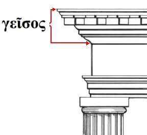

γεῖσος
- γεῖσος
-
- Parse: Noun: Nom/Acc Sing Neut
- Meaning: projecting part of a roof, roof overhang, cornice, eave, soffit, border, ground sill, chapiter, capital
- Forms:
| Neuter |
| | Singular | Plural |
|---|
| NOM | γεῖσος | γείσα
γείση |
| GEN | γείσους | γεισῶν |
| DAT | γείσει | γείσεσι(ν) |
| ACC | γείσος | γείσα
γείση |
- γείσους
-
- Parse: Noun: Gen Sing Neut
- Root: γεῖσος
- γεισῶν
-
- Parse: Noun: Gen Plur Neut
- Root: γεῖσος
- γειτνιάω
-
- Meaning: to be a neighbour, border on, be adjacent
- Forms:
- γειτνιῶν Part: Pres Act Nom Sing Masc
- γειτνιῶντας Part: Pres Act Acc Plur Masc
- γειτνιῶν
-
- Parse: Part: Pres Act Nom Sing Masc
- Root: γειτνιάω
- γειτνιῶντας
-
- Parse: Part: Pres Act Acc Plur Masc
- Root: γειτνιάω
- γειτνιῶντες
-
- Parse: Part: Pres Act Nom Plur Masc
- Root: γειτνιάω
- γείτονα
-
- Parse: Noun: Acc Sing Masc
- Root: γείτων
- γείτονας
-
- Parse: Noun: Acc Plur Masc/Fem
- Root: γείτων
- γείτονες
-
- Parse: Noun: Nom Plur Masc/Fem
- Root: γείτων
- γείτονος
-
- Parse: Noun: Gen Sing Masc/Fem
- Root: γείτων
- γειτόνων
-
- Parse: Noun: Gen Plur Masc/Fem
- Root: γείτων
- γείτοσι, γείτοσιν
-
- Parse: Noun: Dat Plur Masc/Fem
- Root: γείτων
- γείτων
-
- Parse: Noun: Nom Sing Masc/Fem
- Meaning: neighbour
- Forms:
| Masculine/Feminine |
| | Singular | Plural |
|---|
| NOM | γείτων | γείτονες |
| GEN | γείτονος | γειτόνων |
| DAT | γείτονι | γείτοσι(ν) |
| ACC | γείτονα | γείτονας |
| VOC | γείτον | γείτονες |
- γειώραις
-
- Parse: Noun: Dat Plur Masc
- Root: γειώρας
- γειώρας
-
- Parse: Noun: Nom Sing Masc
- Meaning:
- resident alien, someone who has citizenship in one country but is a permanent resident in another
- sojourner
- immigrant
- Note: Also spelled γιώρας
- Forms: